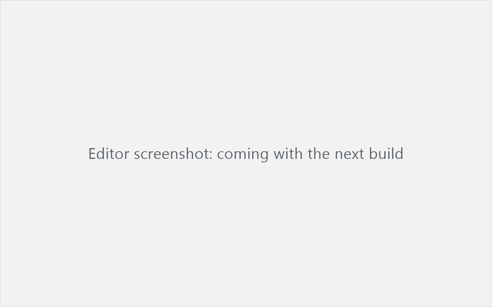

A browser editor for TEI-XML
teiCrafter opens a TEI document, whether an edition, a dictionary or a language corpus, and lets you correct the text and annotate entities with authority identifiers (GND, GeoNames, Wikidata). Where the document links a facsimile, text and page image appear side by side. It runs in the browser; the file stays a local file on your computer.
No upload. Your files never leave your device.

Example projects
Wenzelsbibel
Codex 2759 of the Austrian National Library: word-level encoding with IIIF facsimile. Where the licence-restricted file is not present, a structurally identical sample file loads instead.
Load example Editing unit: linesZBZ Jeanne Hersch
A letter from the Jeanne Hersch papers at the Zentralbibliothek Zürich: line-level OCR-derived TEI with page scans. Where the rights-restricted original is not present, a structurally identical sample file loads instead.
Load example Editing unit: linesStefan Zweig Digital
A letter by Stefan Zweig (1901): line-level transcription with the facsimile from the GAMS repository.
Load exampleHow teiCrafter treats your document
Lossless saving
Your edits go into the original file text and nothing else changes: whitespace, attribute order, comments and entity notation outside the edited passages remain untouched. A document saved without edits is identical to the opened file. Direct saving to disk requires a Chromium-based browser; elsewhere the file is offered as a download.
No configuration needed
The editing unit is read from the document itself: words where the edition encodes <w>, lines otherwise. Image zones and text are linked through @facs in both directions.
Validated while you type
As you edit, the editor checks that the XML stays well-formed and that no text content is lost, and reports the result next to the text. How machine-generated content is handled is described in About.